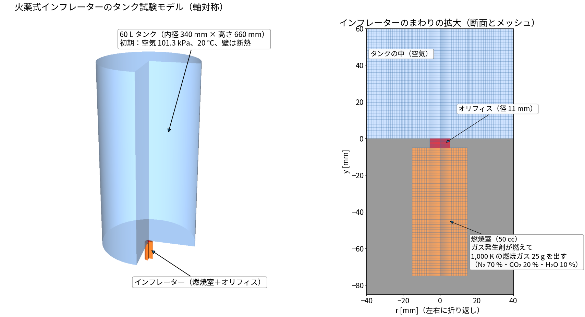
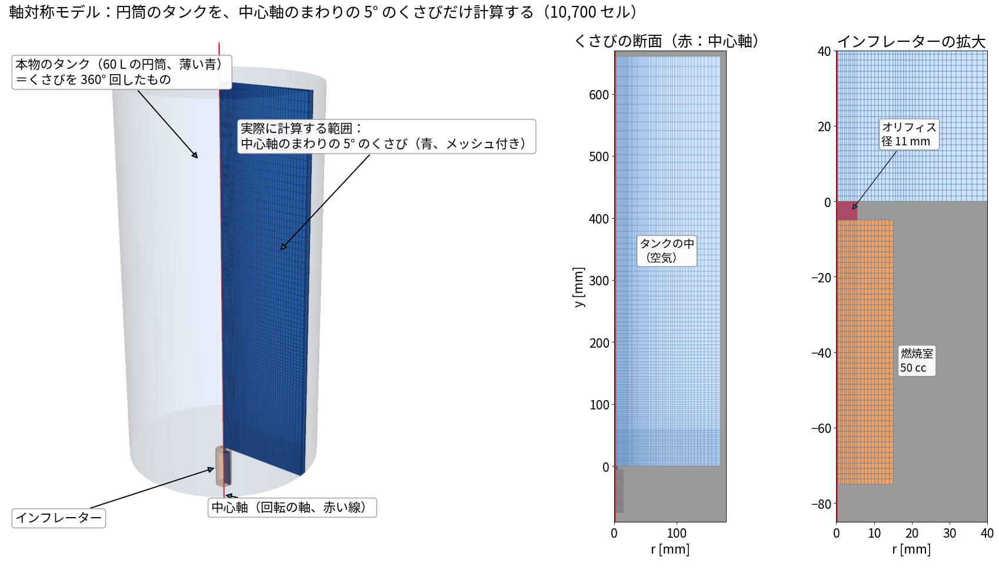
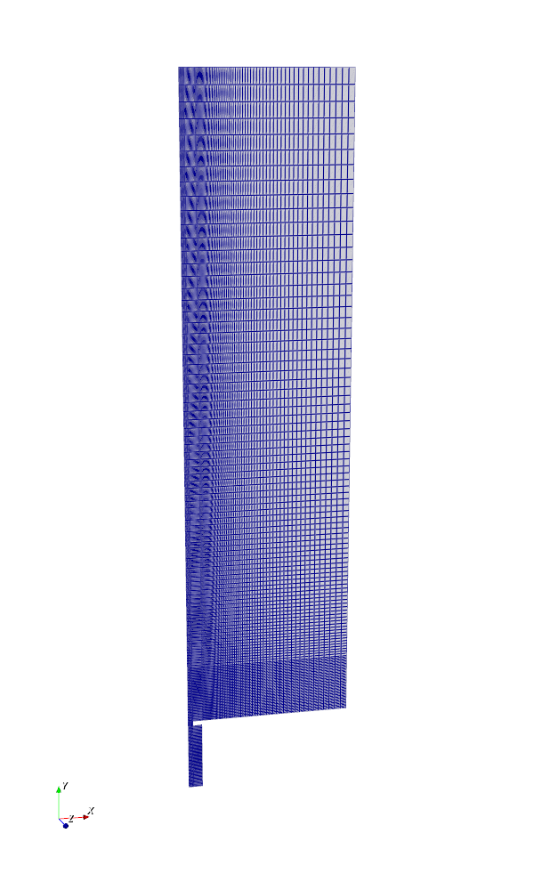
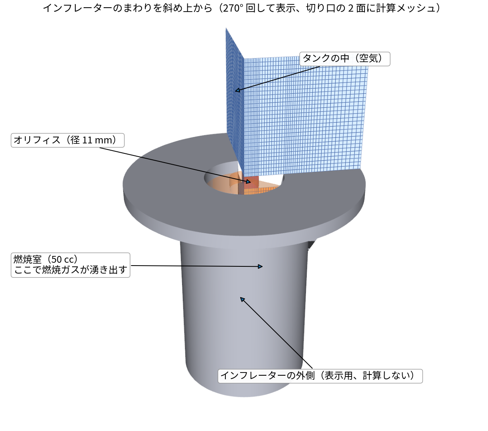
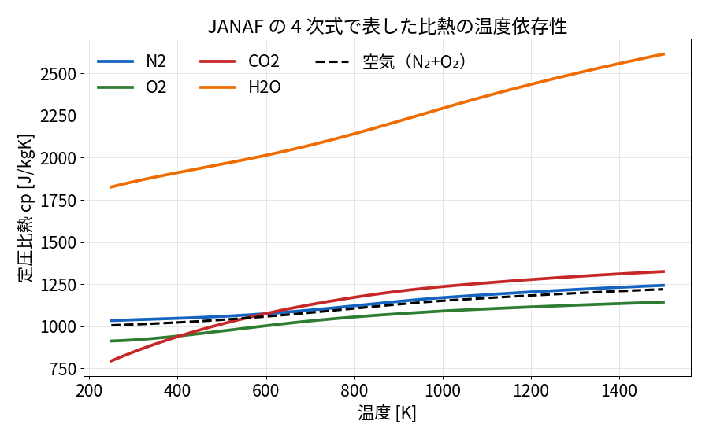
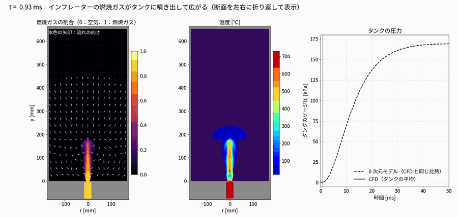
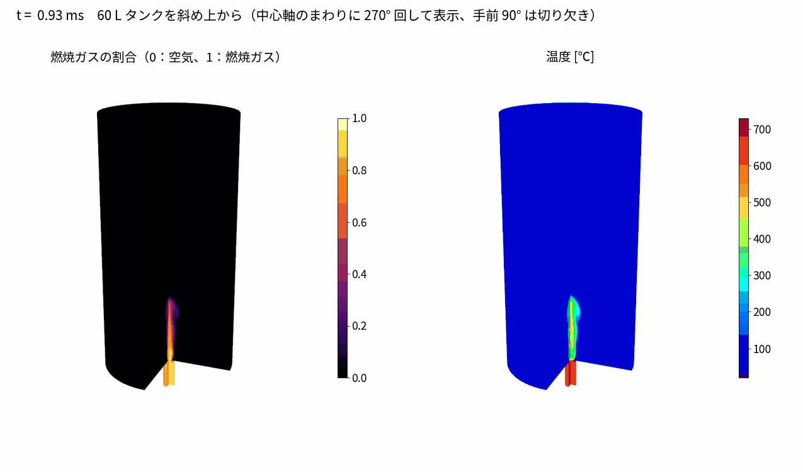
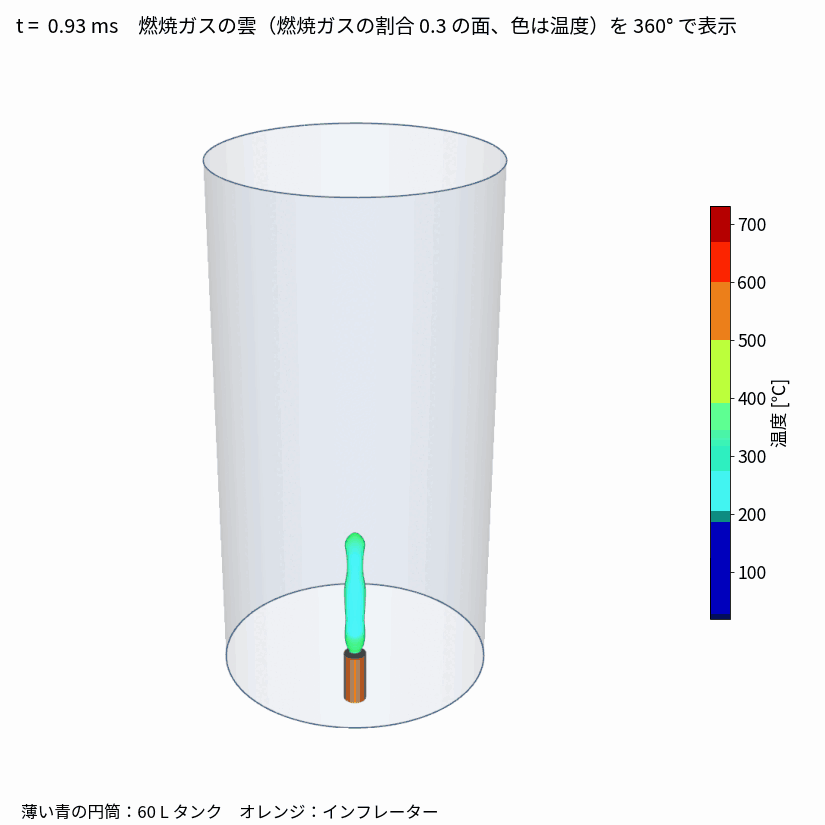
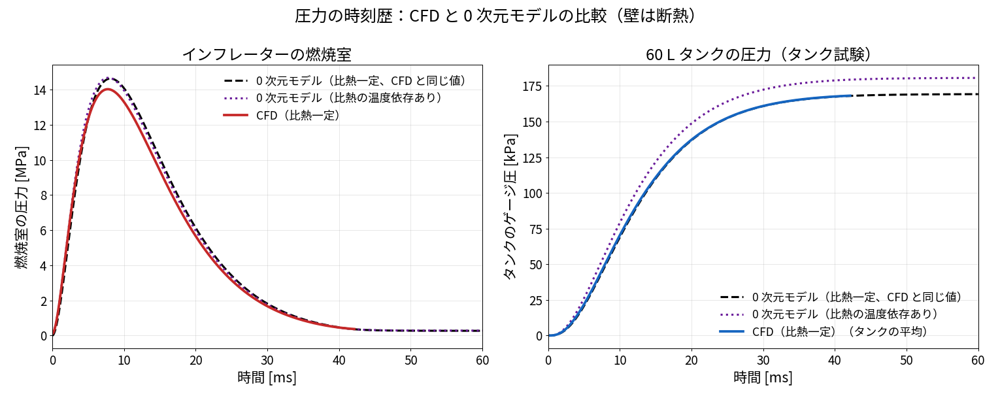

参考・テスト用のケースです。設定のしかたは
00_解析設定の手順書を見てください。
作成日：2026-11-04 OpenFOAM v2512 状態：CFD は計算中（run001：比熱一定、4 並列）（50 ms まで約 11 時間の見込み、1 並列。ほかの計算 4 本と同時に実行中）
エアバッグのインフレーター（ガス発生器）の性能を確かめる「タンク試験」を計算で再現する。 密閉した 60 L のタンク（空気）に、インフレーターの燃焼室からオリフィスを通して燃焼ガスを噴き出し、 **タンクの圧力の時間変化（タンク圧力曲線）**を求める。

軸対称モデル：円筒のタンクとインフレーターは中心軸のまわりで同じ形なので、5°
のくさびだけを計算し（左の青）、 くさびの両面に wedge
条件を付けて、360° 回した全体と同じ結果を得る。

計算メッシュ（5° のくさび、10,700 セル。ParaView で見たときと同じ見え方）：

インフレーターのまわりを斜め上から（270° 回し、切り口の 2 面に計算メッシュ）：

| 項目 | 値 |
|---|---|
| 燃焼室 | 半径 15 mm × 長さ 70 mm（50 cc） |
| オリフィス | 径 11 mm（インフレーターの複数のガス噴出口の合計面積に相当）、長さ 5 mm |
| タンク | 内径 340 mm × 高さ 660 mm（60 L） |
| 初期状態 | すべて空気（N₂ 76.7 %・O₂ 23.3 %、質量割合）、101.3 kPa、20 ℃ |
| 壁 | すべて断熱・すべりなし（0 次元モデルと条件をそろえるため） |
| メッシュ | 5° のくさび形（軸対称）、10,700 セル。オリフィスの半径方向に 10 セル |
ガス発生剤の燃焼そのもの（化学反応）は解かず、燃焼室の中に燃焼ガスが湧き出すものとして与える
（constant/fvOptions の
scalarSemiImplicitSource、燃焼室のセルに一様）。
\[\dot m_{\mathrm{gen}}(t) = M_{\mathrm{gas}}\,\frac{t}{\tau^2}\,e^{-t/\tau},\qquad M_{\mathrm{gas}} = 25\ \mathrm{g},\ \tau = 6\ \mathrm{ms}\]
| 湧き出す量 | 内容 |
|---|---|
| 質量（ρ） | \(\dot m_{\mathrm{gen}}\) |
| エネルギー（h） | \(\dot m_{\mathrm{gen}}\, c_p (T_c - 298\ \mathrm{K})\)、燃焼ガスの温度 \(T_c\) = 1,000 K（フィルタで冷えた後） |
| 成分 | 燃焼ガスの組成 N₂ 70 %・CO₂ 20 %・H₂O 10 %（質量割合） |
数値は、運転席用インフレーターの一般的な値（ガス 1 mol 前後、燃焼室 10〜20 MPa、60 L タンクの最高圧 150〜250 kPa）になるように選んだ。
transonic yes
でオリフィスのチョークに対応）燃焼室とタンクを、それぞれ中が一様な 1 つの部屋とみなし、オリフィスは等エントロピーのノズルとして、 質量とエネルギーのつり合いを時間で積分する（Δt = 2 µs）。壁は断熱。
\[\frac{dm_c}{dt} = \dot m_{\mathrm{gen}}(t) - \dot m_o,\qquad \frac{dE_c}{dt} = \dot m_{\mathrm{gen}}\,h_{\mathrm{gas}}(T_{\mathrm{gen}}) - \dot m_o\,h_c,\qquad p_c = \frac{m_c R_c T_c}{V_c}\]
（\(E_c\)：燃焼室の内部エネルギー、\(h\)：比エンタルピー、\(T_{\mathrm{gen}}\) = 1,000 K：湧き出す燃焼ガスの温度）
チョーク（\(p_t/p_c \le (2/(\gamma+1))^{\gamma/(\gamma-1)}\)）のとき
\[\dot m_o = C_d A_o\,p_c\sqrt{\frac{\gamma}{R_c T_c}}\left(\frac{2}{\gamma+1}\right)^{\frac{\gamma+1}{2(\gamma-1)}}\]
チョークしないとき
\[\dot m_o = C_d A_o\,p_c\sqrt{\frac{2\gamma}{(\gamma-1)R_c T_c}\left[\left(\frac{p_t}{p_c}\right)^{2/\gamma}-\left(\frac{p_t}{p_c}\right)^{(\gamma+1)/\gamma}\right]}\]
\[\frac{dm_t}{dt} = \dot m_o,\qquad \frac{dE_t}{dt} = \dot m_o\,h_c,\qquad p_t = \frac{m_t R_t T_t}{V_t}\]
\(R_t\) と比熱は、空気と燃焼ガスの質量割合で混ぜた値。温度 \(T_t\) は内部エネルギー \(E_t\) から求める。
| 比熱 | 用途 | |
|---|---|---|
| ① 比熱一定 | 成分ごとに一定（N₂ 1,170、O₂ 1,090、CO₂ 1,230、H₂O 2,290 J/kgK）。CFD の run001 と同じ値 | CFD（run001）との答え合わせ |
| ② 温度依存あり（JANAF） | 下の 4 次式（0 次元モデルのみ） | より正しい値の目安 |
\[\frac{c_p(T)}{R_s} = a_1 + a_2 T + a_3 T^2 + a_4 T^3 + a_5 T^4,\qquad \frac{h(T)}{R_s} = a_1 T + \frac{a_2}{2}T^2 + \frac{a_3}{3}T^3 + \frac{a_4}{4}T^4 + \frac{a_5}{5}T^5 + a_6\]
係数 \(a_1 \sim a_6\) は
200（250）〜1,000 K と 1,000〜5,000 K で 2 組（OpenFOAM の
janaf と同じデータ）。
温度はエネルギーからニュートン法で逆算する。

| 0 次元モデルの結果 | ① 比熱一定 | ② 温度依存あり |
|---|---|---|
| 燃焼室の最高圧力 | 14.6 MPa | 14.7 MPa |
| タンクの最高ゲージ圧 | 169 kPa | 181 kPa |
| タンクの最終温度 | 580 K | 604 K |
②のほうが 12 kPa 高い。① は常温の空気の比熱を 1,000 K 付近の値（1,151）で与えていて大きすぎ、 同じエネルギーでも温度が上がりにくかったため。JANAF では常温の空気は 1,009 J/kgK。
（最初の版の 0 次元モデルは空気の比熱を 1,005 にしていて、CFD（1,151）と条件がそろっていなかった。 これが「CFD が 1 割低い」ずれの原因だった。今は①に直してある）

斜め上から（270° 回して表示）：

360° で見た燃焼ガスの雲（燃焼ガスの割合 0.3 の面、色は温度）：

理論式とソルバの向き不向きは
02_理論式とソルバの適性.md。

| 回 | 内容 | 結果 |
|---|---|---|
| 1 | クーラン数を途中で 0.5 → 2 に上げた | 0.3 ms で温度が負になり発散 |
| 2 | メッシュを粗く（5,586 セル） | 0.24 ms で発散 |
| 3 | 圧力の許容誤差を緩めすぎて、圧力方程式が解かれていなかった（反復 0 回） | 燃焼室にガスが増えても圧力が上がらず、温度が暴れて発散 |
| 4（今回） | 細かいメッシュ、クーラン数 0.5、圧力の許容誤差を厳しく（反復の上限 200 回）、温度の上下限 150〜3,000 K | 安定して計算中 |
ここまでの計算（run001）は、タンクの壁を断熱にしていた。 実際のタンク試験では、高温の燃焼ガスが壁に熱を奪われ、圧力が最高点のあと下がっていく。 壁への熱の逃げ方は熱伝達率で決まるが、その値を仮定せずに求めたい。 そこで、燃焼ガス（混合ガス）・タンクの鋼の壁・外の空気の 3 つを同時に解く（固体連成、CHT）。
run002_CHT_wall_outsideAir）| 領域 | 中身 | 範囲 |
|---|---|---|
gas（流体） |
燃焼ガス N₂/CO₂/H₂O と空気 N₂/O₂ の混合ガス、k-ω SST | 燃焼室・オリフィス・タンク（run001 と同じ） |
wall（固体） |
鋼（密度 7,850、比熱 460、熱伝導率 45）、厚さ 5 mm | タンクの底板・側面・ふた |
outside（流体） |
空気（層流、重力あり）。外周は 293 K | 側面の外 60 mm、ふたの上 60 mm |
gas_to_wall・wall_to_outside）は、温度と熱流束がつり合う条件で、熱伝達率は計算から決まる。tools/make_tank_cht_case.py。| 回 | ソルバ | 内容 | 結果 |
|---|---|---|---|
| 1 | chtMultiRegionFoam（ESI v2512） |
run001
と同じく、燃焼室の体積から質量・エネルギーを湧き出させた（fvOptions） |
失敗。燃焼室の圧力が run001 の約 1/4
しか上がらず、温度が上限の 3,000 K
に張り付いた（_failed_run002_CHT_volumeSource） |
| 2 | 同上 | 燃焼ガスを、燃焼室の底の境界から流量で入れる形に変えた（入る質量とエネルギーは同じ） | 0.3 ms までは run001 とほぼ同じ圧力（3.24 対 3.13 bar）。0.62 ms で時間刻みが 10⁻¹¹ s 以下に縮んで、進まなくなった |
1 回目の原因：chtMultiRegionFoam
の圧力の式に、体積から質量が湧き出す項（fvOptions(psi, p, rho)）が入っていない（ソースで確認）。
reactingFoam
には入っている。質量は密度の式には足されるが、圧力が合わないため、エネルギーだけが溜まった。
2 回目の原因：止まった 0.62 ms は、燃焼室の圧力が約
0.96 MPa
になり、オリフィスが強くチョーク（音速で流量が頭打ち）し始めたところ。
chtMultiRegionFoam
の圧力の式には、超音速を安定して解く形（transonic）がない。
レーザー切断のアシストガスでも、同じソルバがノズルのチョークのところで同じように止まった（02_laserAssistGas
の解説 5 章）。
レーザー切断では、Foundation 版の OpenFOAM 13 の
foamMultiRun
で、混合ガス・超音速・固体連成を解けた。 流体の部品
multicomponentFluid は transonic
に対応している。そこで、エアバッグも OpenFOAM 13 で計算し直す。
| 領域 | OpenFOAM 13 の部品 | 時間の進め方 |
|---|---|---|
gas |
multicomponentFluid（transonic yes） |
非定常（圧力の時刻歴を見たいので LTS は使わない） |
wall |
solid |
非定常 |
outside |
fluid または multicomponentFluid |
非定常 |